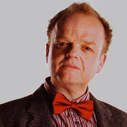

| Home | The Doctors | The Companions | The Villans |
|
|||
|
Dream Lord
Appearing in the episode "Amy's Choice", an individual calling himself the Dream Lord (Toby Jones) claims to offer the Doctor and his companions a choice between two life-threatening scenarios, for them to determine which is real. After realising that both realities were false, the Doctor reveals that the 'Dream Lord' was a manifestation of his own dark impulses, manifested by a psychic projection; having lived for hundreds of years, the Doctor's psyche has more abundant darkness in his mind than do those of Amy or Rory. The projection is caused by psychic pollen from the candle meadows of Karass Don Slava that gets stuck in the time rotor of the TARDIS, which causes it to heat. At the end of the episode, his reflection is seen by the Doctor on the TARDIS' Console. |